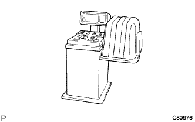
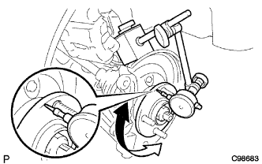

Wheel & tire (4WD) inspection |
| 1. Tire inspection |
Tire size and wear status inspection
Tire air pressure inspection
| Specifications (tire size) | Air pressure (front wheels/rear wheels) [KPA {kgf/cm)2｝] |
|---|---|
| 175/70R14-84s | 220 {2.2} |
Suspension remodeling and damage inspection of each part of the foot.
 |
Tire swing inspection
Inspection of bolts in each part
Rattle inspection of each part of the relationship
| 2. Tire rotation |
 |
If you have a direction, rotate the tires as shown in B, and if you do not have a direction.
| 3. Wheel balance inspection |
Inspection of wheel balance (off -the -car balance).
Adjust the wheel balance (off -the -car balance).
|  |
If the tire occurs even after the off -the -car balance adjustment is made, the on -the -car balance adjusts.
| 4. Front axle swing and axial rattling inspection |
Remove the front tire
 |
Front disc brake caliper cut off
Remove the two bolts and disconnect the disc brake caliper ASSY from the steering knuckle.
Remove the front disc
Front axle hub bearing shaft direction backlash inspection
 |
Set the dial gauge in the position of the front axle hub to check the gata in the shaft direction of the bearing.
Front axle hub swing inspection
|  |
Set the dial gauge at the position of the front axle hub to check the shake of the bearing.
Installation of front disk
|
Front disc brake caliper mounting
Attach the disc brake caliper ASSY to the steering knuckle with two bolts.
Installation of front tires
| 5. Rear axle swing and axial idiot inspection |
Remove the rear tire
Remove the rear brake drum
Rear Axle Hub Hub Bearing Axial Ruts Inspection
 |
The dial gauge is set in the position of the rear axle hub, and the rattling direction of the rear axle hub bearing is inspected.
Rear axle hub swing inspection
 |
Set the dial gauge in the position of the rear axle hub to check the swing of the rear axle hub.
Rear brake drum installation
Rear tire installation